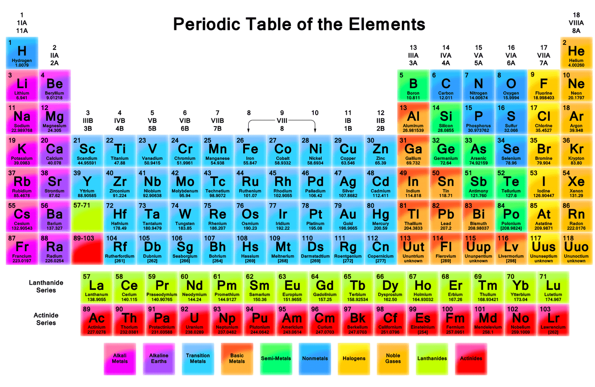

UNIT 1 · OFFICIAL EQUATION SHEET (FALL 2026)
ECE 321 Unit 1 Equation Sheet: Semiconductor Physics & Diodes
Official reference sheet for Lessons 1–7 covering physical constants, carrier statistics, drift and diffusion, p-n junction physics, and diode models.
1. Fundamental Physical Constants & Carrier Concentrations Lessons 1–2
Physical Constants
| Quantity | Symbol | Value |
|---|---|---|
| Planck’s Constant | h | 6.626 × 10−34 J·s 4.141 × 10−15 eV·s |
| Boltzmann’s Constant | k | 1.38 × 10−23 J/K 8.62 × 10−5 eV/K |
| Speed of Light | c | 2.998 × 108 m/s |
| Elementary Charge | q | 1.602 × 10−19 C |
| Temperature Conversion | T (K) | T (°C) + 273.15 |
Photon Energy & Electric Field
1 eV = 1.602 × 10−19 J
For Silicon (Si): B = 7.3 × 1015 cm−3·K−3/2, Eg = 1.12 eV.
At T = 300 K: ni,Si = 1.5 × 1010 cm−3
n-type material: nn0 ≅ ND, pn0 = ni2 / ND
p-type material: pp0 ≅ NA, np0 = ni2 / NA
2. Semiconductor Material Properties & Unit Conversions Silicon · Germanium · Gallium Arsenide
| Material | Bandgap Energy Eg (eV) | Electron Mobility μn (cm²·V−1·s−1) | Hole Mobility μp (cm²·V−1·s−1) | Diffusion Dn (cm²/s) | Diffusion Dp (cm²/s) | Atom Density (atoms/cm³) |
|---|---|---|---|---|---|---|
| Silicon (Si) | 1.12 | 1360 | 460 | 34 | 11.5 | 5.0 × 1022 |
| Germanium (Ge) | 0.66 | 3900 | 1900 | 97.5 | 47.5 | 4.4 × 1022 |
| Gallium Arsenide (GaAs) | 1.42 | 8000 | 320 | 200 | 8.0 | 4.42 × 1022 |
Metric Length Conversions
1 cm = 10,000 μm = 1 × 107 nm | 1 μm = 1,000 nm | 1 (μm)² = 1 × 10−8 cm²
3. Carrier Motion: Drift, Diffusion & Einstein Relation Lesson 2
Units: A/cm²
vp = μp E, vn = −μn E, I = v · q · A · (carrier density)
μn and μp decrease with increasing doping concentration due to impurity scattering.
VT = 25.9 mV at T = 300 K (standard room temp)
VT = 25.0 mV at T = 290 K
4. PN-Junction Physics & Diode Equations Lessons 2–3
Silicon permittivity: εs = 11.7 · ε0 = 1.04 × 10−12 F/cm
Forward bias: replace (V0 + VR) with (V0 − VF).
Charge Balance: q A xp NA = q A xn ND ⇒ xn / xp = NA / ND
Total Width: W = xn + xp
n: ideality factor (1 ≤ n ≤ 2). n = 1 for ideal diffusion.
5. Periodic Table of the Elements Semiconductor Reference

6. Diode Junction Capacitance (Reverse Bias) Lesson 6
Grading coefficient: 1/3 ≤ m ≤ 1/2 (typically m = 1/2 for abrupt step junction, 1/3 for linearly graded).
Cj0 represents junction capacitance at zero applied voltage (VR = 0).
7. Diode Circuit Analysis Models Lessons 4–5
1. Ideal Diode Model
ON state (Short Circuit):
VD = 0 V
Verify: ID > 0
OFF state (Open Circuit):
ID = 0 A
Verify: VD < 0 V
2. Constant Voltage Drop (CVD)
ON state (0.7V Source):
VD = 0.7 V
Verify: ID > 0
OFF state (Open Circuit):
ID = 0 A
Verify: VD < 0.7 V
3. Shockley Diode Model
Provides exact exponential I-V curve for forward bias. Inversion gives:
Gauss-Seidel Iterative Update Equations
k: number of identical diodes connected in series.
Iterate until ΔVD converges to within desired tolerance.
8. Diode Small-Signal Model, Voltage Regulation & Zener Lesson 6
Small-Signal Notation & Dynamic Resistance
iD = ID + id | vD = VD + vd
Linearity test: valid for small signal amplitude vd ≤ 5 mV × n.
Zener Diode Characteristics
Given knee/operating point (VZ, IZ):
VZ0 = VZ − rz IZ